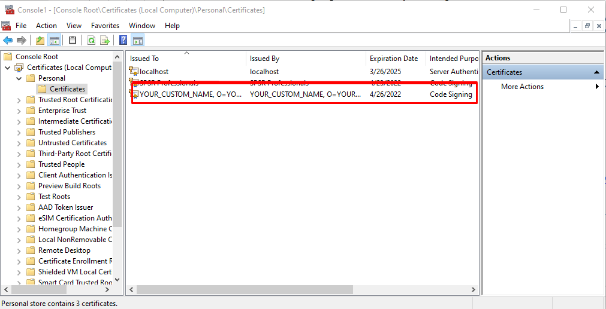

A self signed certificate is a digital certificate thats not signed by a publicly trusted certificate authority (CA). The reason why they are considered different from traditional certificate-authority signed certificates is that they are created, issued, and signed by the company or developer who is responsible for the website or software being signed. This is why self signed certificates are considered unsafe for public-facing websites and applications.
The purpose of this article is to create a self-signed certificate to sign the desktop application developed in visual studio and packaged with inno setup which prompts Unknown publisher info while launching the installer exe build by inno setup. Basically its for testing purpose only
To create your own cetficate you have to open the windows Power Shell (As Administrator) and type the following command in it
New-SelfSignedCertificate -Type Custom -Subject "CN=YOUR_CUSTOM_NAME, O=YOUR_ORGANIZATION_NAME, C=COUNTRY_CODE_TWO_CHARACTERS_ONLY" -KeyUsage DigitalSignature -FriendlyName "FRIENDLY_NAME_WHICH_APPEAR" -CertStoreLocation "Cert:\LocalMachine\My" -TextExtension @("2.5.29.37={text}1.3.6.1.5.5.7.3.3", "2.5.29.19={text}")
for more parameter details you can refere microsoft documentation for New-SelfSignedCertificate
After execute above command successfully you will the message in power shell something like below

Next is to retreive this certificate (.pfx) file you need to hit windows start button -> and type RUN. Then type mmc in the prompt and hit enter

When Microsoft Management Console appear click on file menu -> Add/Remove snap in...
In the Add / Remove window select the "Certificates" from available snaps-in and click on "Add" button

After click "Ok" select the "Computer account" from Certificates snap in window and click "Next"

Select "Local Computer" from select computer window and "Finish" the process

You will see the "Certificates" folder in Console root. Expand Personal folder and click on certificates, in the right panel you will see the created certificate.
